使用教程
快速上手 YinDesign 音嘚赞，掌握 InDesign 智能拼音注音的完整流程
功能概览
YinDesign 音嘚赞是一款专为 Adobe InDesign 设计的中文拼音注音插件。它利用 InDesign 原生的 Ruby（注音）功能，为中文文本批量添加拼音标注，支持横排和竖排文本，适用于教材、古籍、儿童读物等出版物的排版工作。
- 批量添加拼音：一键为选区、文本串接或页面范围内的文字添加拼音注音，内置超过 21000 个汉字的拼音库
- 多音字智能处理：自动检测多音字并提供候选读音，支持手动选择正确的拼音
- 括号包裹：为拼音添加自定义括号符号，支持半角/全角括号，适合不同排版风格
- 字转注音：将中文文本转换为带声调的拼音文本，支持多种输出格式和括号组合
- 简繁转换：一键将简体中文转换为繁体中文，或反向转换，满足不同出版需求
- 精细参数控制：拼音字号、偏移量、缩放、对齐、间距、溢出处理等参数均可自由调整
主界面介绍
插件启动后，InDesign 右侧会出现 YinDesign 面板。面板分为左右两栏：左侧为操作区域，右侧为拼音参数设置区域。
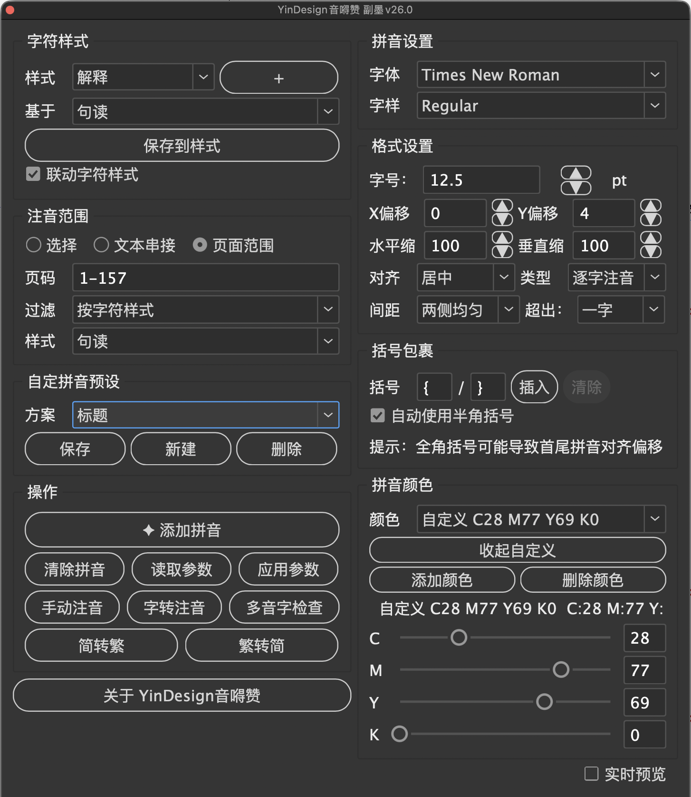
左侧面板：操作区
字符样式
选择或创建用于拼音注音的字符样式。点击 "+" 按钮可新建样式，"保存到样式"按钮将当前参数保存到所选样式中。勾选"联动字符样式"后，修改面板参数会自动同步更新字符样式。
注音范围
提供三种注音范围选择：
| 选项 | 说明 |
|---|---|
| 选择 | 仅对当前选中的文字或文本框添加拼音 |
| 文本串接 | 对整个文本串接（Story）中的文字添加拼音 |
| 页面范围 | 对指定页面范围内的文字添加拼音，可输入页码如 "1-157" |
选择"页面范围"时，还可通过"过滤"下拉菜单按字符样式筛选，只对特定样式的文字添加拼音。
自定拼音预设
保存、新建或删除拼音参数预设方案。例如可以为"标题"和"正文"分别保存不同的拼音样式方案，一键切换使用。
操作按钮
| 按钮 | 功能 |
|---|---|
| 添加拼音 | 主功能按钮，根据当前设置批量添加拼音注音 |
| 清除拼音 | 移除选中文字的所有拼音注音 |
| 读取参数 | 从选中文字的拼音中读取当前参数设置 |
| 应用参数 | 将当前面板参数应用到已有拼音上 |
| 手动注音 | 打开批量手动注音对话框，逐一为每个字设置拼音 |
| 字转注音 | 打开字转注音工具，将中文转换为拼音文本 |
| 多音字检查 | 检查选中文字中的多音字，逐一确认正确读音 |
| 简转繁 / 繁转简 | 简体中文与繁体中文互相转换 |
右侧面板：参数设置
拼音设置
设置拼音的字体和字样（如 Times New Roman Regular）。建议使用与正文协调的西文字体。
格式设置
| 参数 | 说明 | 建议值 |
|---|---|---|
| 字号 | 拼音文字的大小 | 正文的 50%-70%，如 6-12pt |
| X 偏移 | 拼音水平偏移量 | 通常为 0 |
| Y 偏移 | 拼音垂直偏移量 | 正值远离文字，负值靠近文字 |
| 水平缩放 | 拼音文字的水平缩放比例 | 100% |
| 垂直缩放 | 拼音文字的垂直缩放比例 | 100% |
| 对齐 | 拼音与文字的对齐方式 | 居中 |
| 类型 | 逐字注音或分组注音 | 逐字注音 |
| 间距 | 拼音超出文字时的间距调整方式 | 两侧均匀 |
| 超出 | 拼音超出父字符的处理方式 | 一字 |
括号包裹
在拼音前后添加自定义括号符号。输入左括号和右括号字符后，点击"插入"即可为选中文字的拼音添加括号，点击"清除"则移除括号。
拼音颜色
设置拼音文字的颜色。可以从预设颜色列表中选择，也可以点击"添加颜色"自定义 CMYK 颜色值。
安装与激活
安装方法
- 将
YinDesign 副墨V26.0.jsx文件复制到 InDesign 的脚本文件夹中。路径通常为：~/Library/Application Support/Adobe/InDesign/Version xx.0/Scripts/Scripts Panel/ - 打开 InDesign，选择菜单 窗口 > 实用程序 > 脚本（Window > Utilities > Scripts）
- 在脚本面板中找到 YinDesign 脚本，双击运行
激活流程
首次运行插件时，会弹出激活对话框。
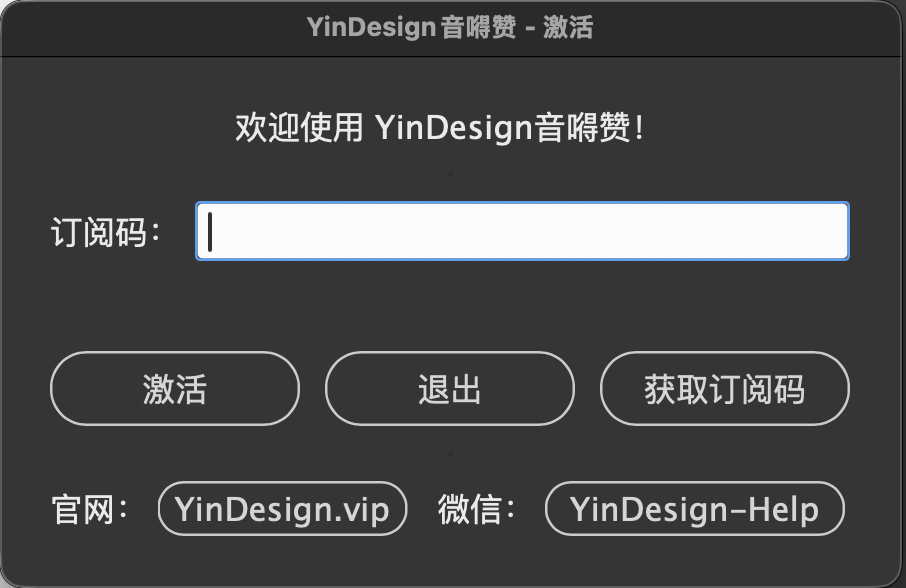
- 在"订阅码"输入框中输入获得的订阅码
- 点击"激活"按钮完成激活
添加拼音
基本操作
- 在 InDesign 中选中需要添加拼音的中文文字（或选择注音范围为"文本串接"/"页面范围"）
- 在右侧面板中设置拼音参数：字体、字号、偏移量等
- 如需括号，在"括号包裹"区域输入左右括号字符
- 点击左侧的"添加拼音"按钮
竖排文本效果
YinDesign 同样支持竖排文本的拼音注音，拼音会自动沿文字右侧排列。
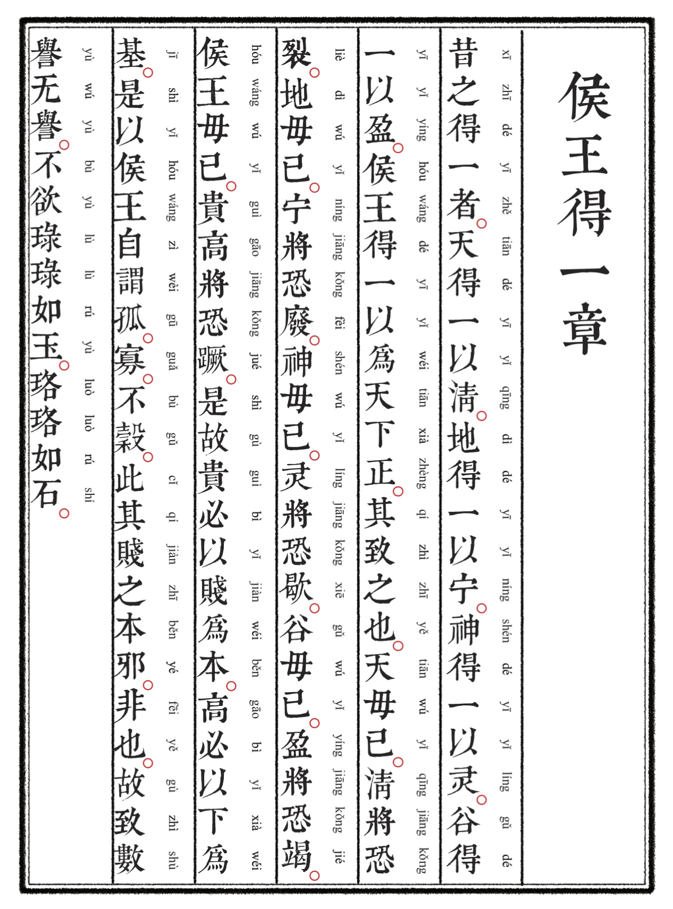
手动注音
当自动拼音不准确时（如人名、地名、古文用字），可以使用"手动注音"功能逐一修改。
批量手动注音
点击"手动注音"按钮后，弹出批量手动注音对话框。对话框以表格形式列出选中文字的每个汉字及其拼音。直接在"拼音"列中编辑即可。支持两种输入方式：
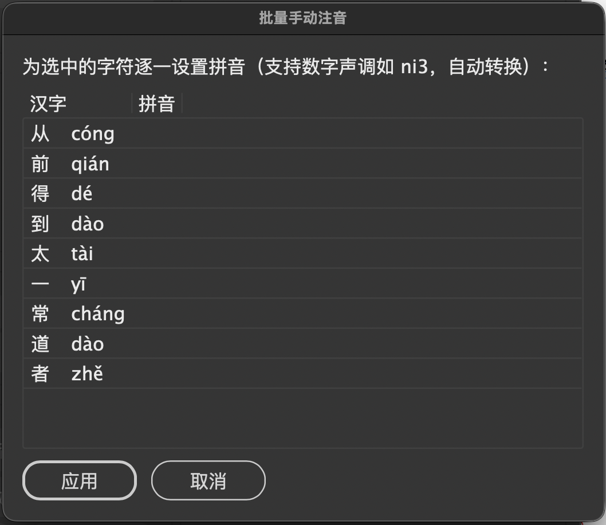
- 数字声调：输入带数字声调的拼音（如
ni3），插件自动转换为带声调符号的拼音（nǐ） - 直接粘贴：直接粘贴带声调符号的拼音（如 cóng）
编辑完成后点击"应用"按钮，所有修改将一次性应用到文档中。
单字拼音编辑
在批量手动注音对话框中双击某个汉字的拼音单元格，会弹出单字编辑对话框。修改后点击"确定"保存。
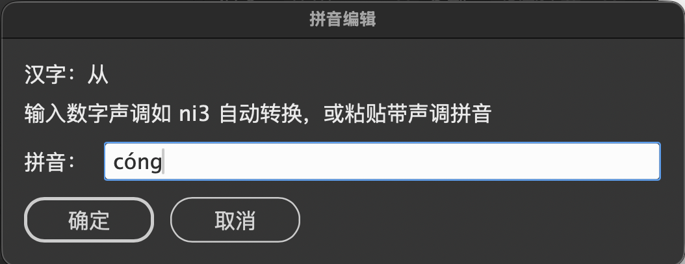
多音字检查
中文中许多汉字有多种读音（多音字）。插件可以自动检测多音字并让用户选择正确的读音。
- 选中包含多音字的文本
- 点击"多音字检查"按钮
- 插件逐个检测多音字，弹出选择对话框
对话框中显示当前汉字的所有可能读音，以及当前已设置的拼音。点击正确的读音按钮即可确认。如果不确定，可点击"跳过此字"暂时跳过，或点击"取消全部"终止检查。
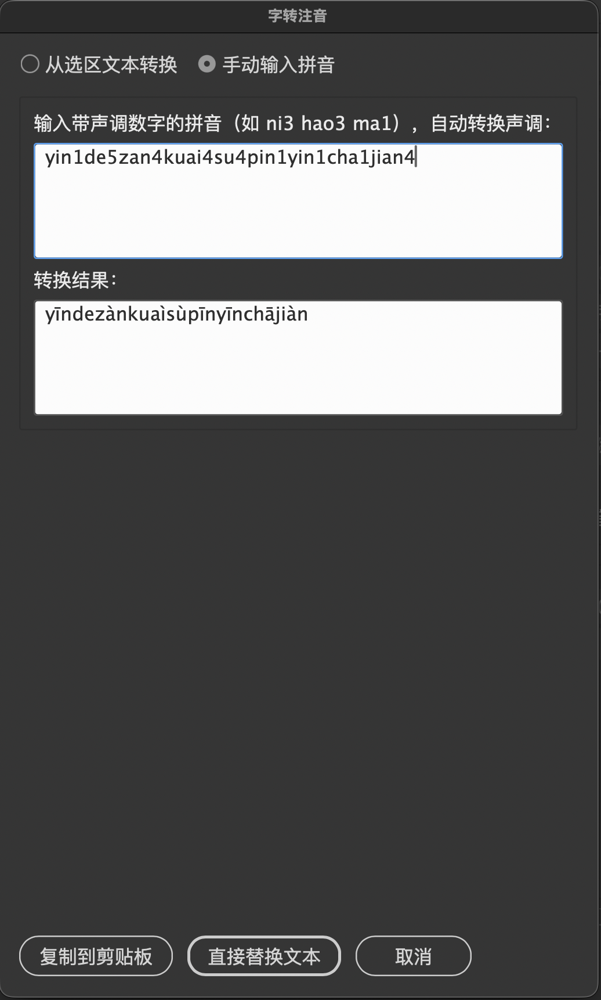
字转注音
字转注音工具可以将中文文本转换为纯拼音文本，支持多种输出格式。适用于需要导出拼音对照、制作拼音练习材料等场景。
从选区文本转换
选中文字后点击"字转注音"，选择"从选区文本转换"模式。右侧的输出选项可以自由组合：
| 选项 | 说明 |
|---|---|
| 空格分隔 | 拼音之间用空格分隔 |
| 换行 | 每个拼音后换行 |
| 保留声调 | 保留声调符号（ā á ǎ à） |
| 附带汉字 | 在拼音后附带原汉字 |
| 去掉标点 | 去除文本中的标点符号 |
| 拼音在前 | 拼音显示在汉字前面 |
| 字与拼音换行 | 汉字和拼音分行显示 |
还可以设置括号符号（如 { 和 }），拼音将被括号包裹。预览区域实时显示输出效果。
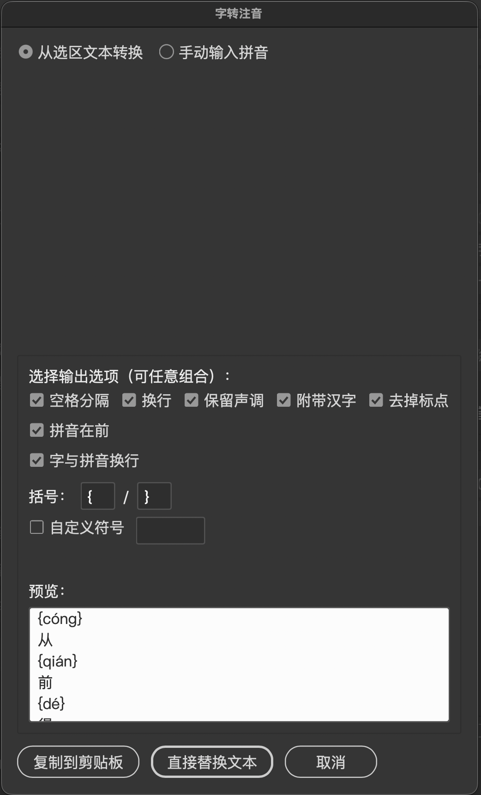
手动输入拼音
切换到"手动输入拼音"模式后，可直接输入带数字声调的拼音文本。输入如 yin1de5zan4 的文本，插件自动转换为 yīndezán。点击"复制到剪贴板"可复制结果，点击"直接替换文本"可将选中的中文替换为拼音。
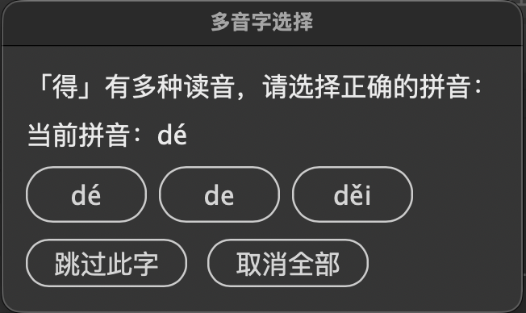
括号包裹
括号包裹功能为已有的拼音添加自定义括号符号，常用于教材排版中区分拼音和正文。
- 选中已添加拼音的文字
- 在"括号包裹"区域输入左括号和右括号字符（如
[和]） - 点击"插入"按钮
支持任意符号作为括号，包括但不限于：
| 类型 | 示例 |
|---|---|
| 方括号 | [ ] 【】 ［］ |
| 圆括号 | ( ) （） |
| 花括号 | { } ｛｝ |
| 尖括号 | < > 《》 〈〉 |
| 引号 | " " ' ' 「」 『』 |
| 其他符号 | / \ | ~ - = + * # @ 等 |
点击"清除"按钮可移除拼音中的括号。清除功能支持完整括号对（如 [test]）和单侧括号（如 /test）。
字符样式管理
新建字符样式
点击字符样式区域的 "+" 按钮，弹出新建样式对话框。输入样式名称，选择基于的父样式，点击"确定"即可创建。创建后可通过"保存到样式"按钮将当前拼音参数保存到该样式中。
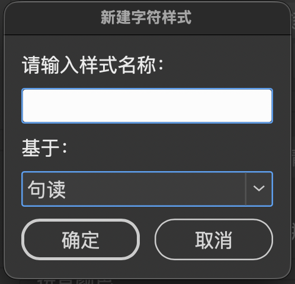
联动字符样式
勾选"联动字符样式"后，修改面板中的拼音参数会自动同步更新到关联的字符样式中。这样修改参数后无需手动"保存到样式"。
预设方案管理
预设方案用于保存不同的拼音参数组合，方便在不同排版场景间快速切换。
- 调整好拼音参数（字体、字号、偏移量、颜色等）
- 点击"新建"按钮，输入方案名称（如"标题拼音"、"正文拼音"）
- 点击"保存"按钮保存当前参数到该方案
- 下次使用时，从下拉菜单选择对应方案即可快速恢复参数
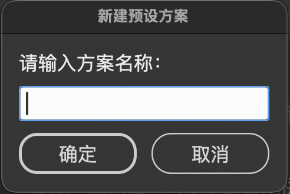
简繁转换
插件提供简体中文与繁体中文的互相转换功能。
- 简转繁：将选中的简体中文转换为繁体中文
- 繁转简：将选中的繁体中文转换为简体中文
转换范围同样支持"选择"、"文本串接"和"页面范围"三种模式，由左侧的注音范围设置决定。
关于与更新
点击"关于 YinDesign 音嘚赞"按钮打开关于对话框。关于对话框显示当前版本号、订阅状态和剩余天数。提供以下功能：
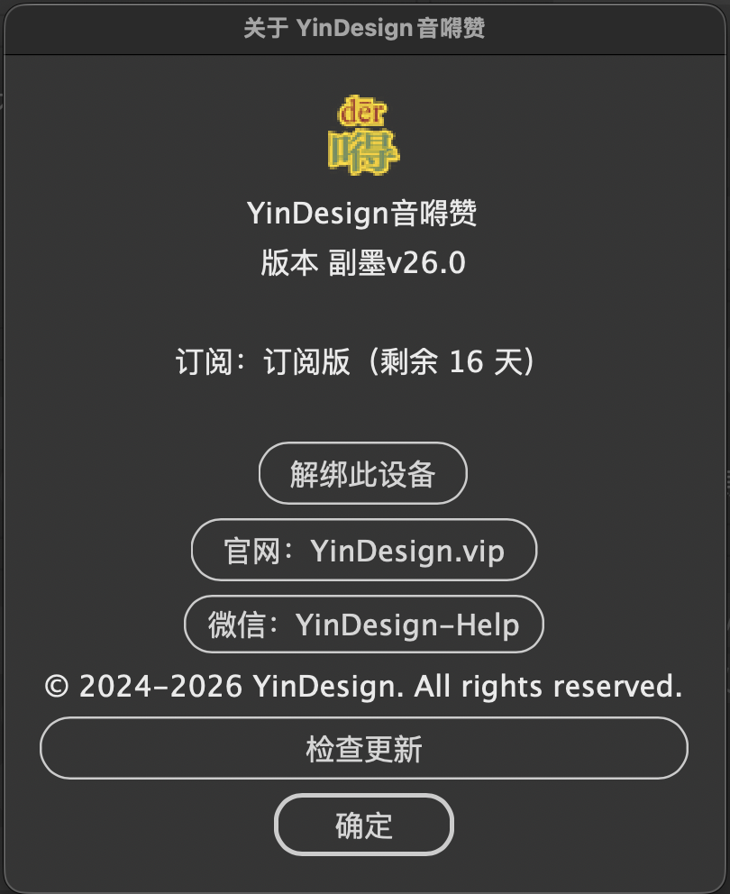
| 按钮 | 功能 |
|---|---|
| 解绑此设备 | 解除当前设备的绑定，以便在其他设备上激活 |
| 官网：YinDesign.vip | 访问官方网站获取最新信息和购买订阅 |
| 微信：YinDesign-Help | 添加微信客服获取技术支持 |
| 检查更新 | 检查是否有新版本可用 |
常见问题
Q: YinDesign 音嘚赞支持哪些 InDesign 版本？
A: 支持 macOS 平台上的 Adobe InDesign CC 及以上版本。
Q: 插件如何处理多音字？
A: 插件内置智能多音字识别系统，根据上下文语境自动选择正确读音，并支持人工校对确认。
Q: 支持繁简转换吗？
A: 支持。内置 1100+ 繁简字对照表，经 OpenCC 国家标准校对，可一键完成简繁互转。
Q: 有哪些订阅方案？
A: 提供三种订阅方案：启明版（¥49/月）、长庚版（¥199/年）、太白版（¥399/3年），所有方案功能完全一致。
Q: 可以在多台电脑上使用吗？
A: 同一时间只能在一台设备上激活使用。如需更换设备，在"关于"对话框中点击"解绑此设备"，然后在新设备上重新激活即可。
Q: 订阅过期后数据会丢失吗？
A: 不会。订阅过期后，已添加的拼音注音不会消失，只是无法使用插件功能进行新增或修改操作。